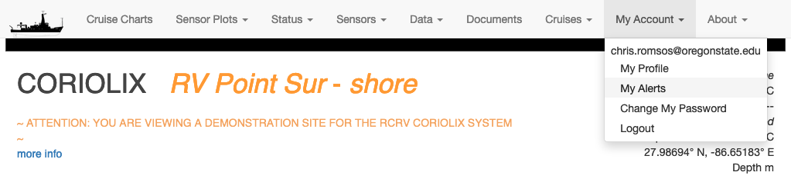

How to create a CORIOLIX account
At present, most of the content at the CORIOLIX web user interface is available to an unauthenticated anonymous user. However, some core functionality is restricted to named local users who must first register for an account, then login to gain access to the restricted content.
Creating an account for the first time:
Browse to the CORIOLIX site relative to the vessel you are interested in:
From the shoreside:
- https://coriolix.ceoas.oregonstate.edu/oceanus
- https://coriolix.ceoas.oregonstate.edu/endeavor
- https://coriolix.ceoas.oregonstate.edu/ptsur
From the shipside:
- https://10.128.240.84 (oceanus)
- https://coriolix/endeavor
- https://192.168.1.162
From the navigation options at the top of the page, select: My Account > Create New Account

Complete the User Profile setup form and select the Submit button. Note the email and password that you used. You'll use these credentials to access CORIOLIX.

Setting up your user specific alerts:
From the site navigation options select: My Account > My Alerts

There are currently four alert types:
- Custom User Alerts - Custom alerts work by evaluating sensor parameter value against a threshold condition. You may combine up to two sensors or sensor parameters per custom alert.
- Proximity Alerts - Proximity alerts evaluate the location of the vessel against geographic points of interest (stations, ports, etc.)
- Temporal Alerts - Temporal alerts evaluate the time now against a datetime parameter for a sensor (e.g. calibration date, warranty expiration date, schedule maintenance data, etc.) that you want to monitor. Users may set an additional parameter, offset, to receive advance notice of a pending event.
- Sensor Alerts - Explanation TBD